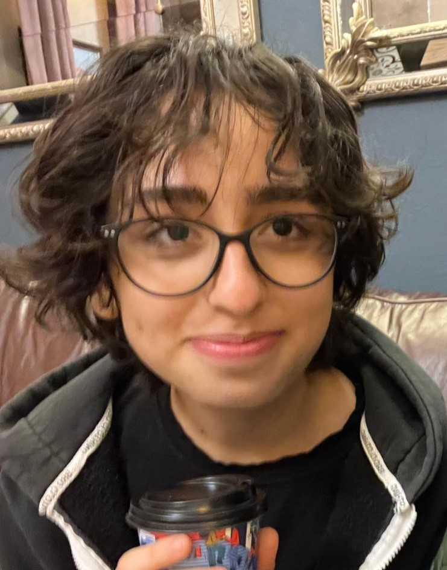

Gizemsu Tuğba Koç
Junior Web Designer & Artist
SUMMARY
I am a high school studen who aims to create apps & webdesigns with ethical design understanding. Interested in neuroscience, photography and programming.
EDUCATION
Beşiktaş Anatolian High School | 09.2023 - Current
- %1,30 accaptance rate by the High School Entrance Exam.
- Debate, MUN, FRC Clubs
Science and Art Center | 2018-Current
- Institutions where gifted students in Turkey can receive additional education in order to recognize the areas they are talented in and develop their talents, in addition to their schools
- Working with mentor to create her own projects while the high school.
Nesin Math Village | 08.2023 - 08.2023
- I took math classes from the math proffessors for 2 weeks, 8 hrs per day.
- Done the daily chores: Washing the dishes, cleaning wcs, preparing the breakfast etc. as a volunteer.
EXTRACURRICULLARS
Software Developer at FRC team | 04.2023 - Current
- I'm working with a team to make a robot for the FRC competitions.
Debate Team | 09.2023 - Current
- I participate in debate tournaments.
- I was at the finance part to make our school's debate tournament.
Tubitak Teknofest Competitor
- Developed a software app to help people with Asperger's syndrome in social interactions.
- Designed and created a physical game to support children's computational thinking, passed 2 out of 3 finals.
SKILLS
- Team Work
- Python
- Debating
- Project Management
Contact Me